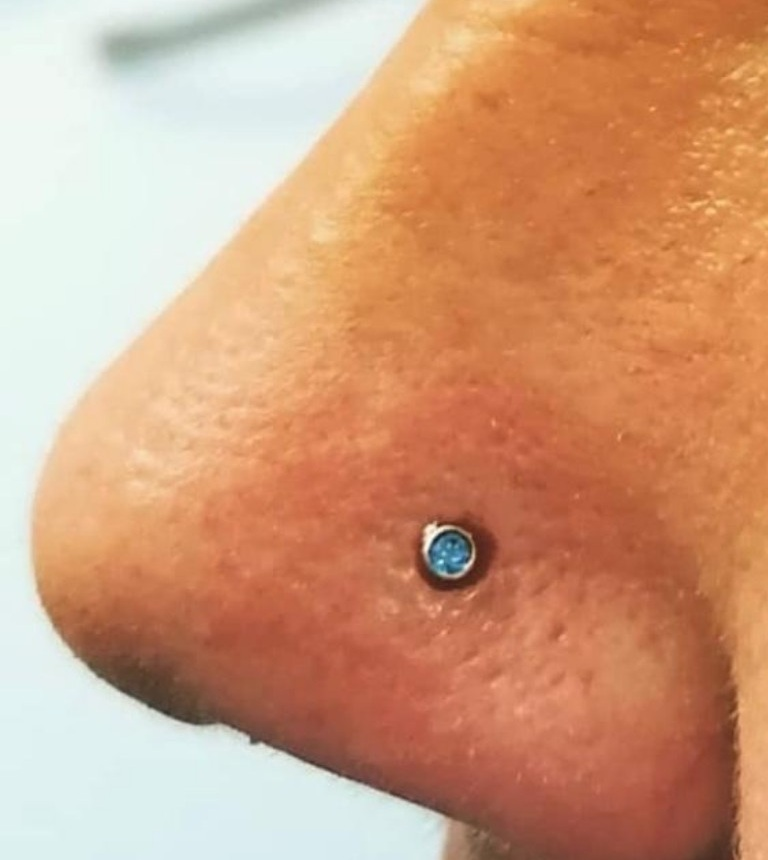
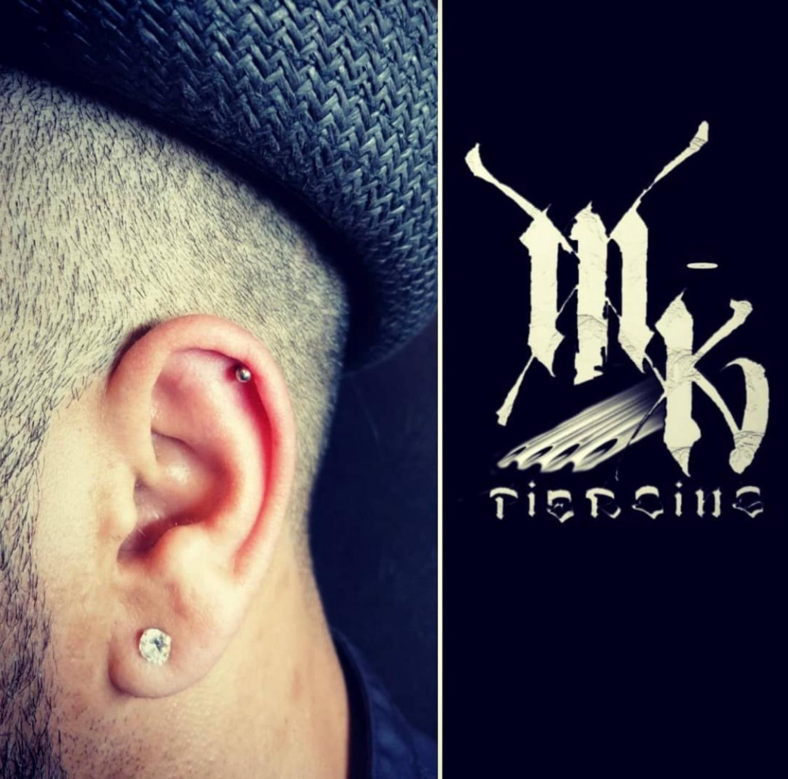
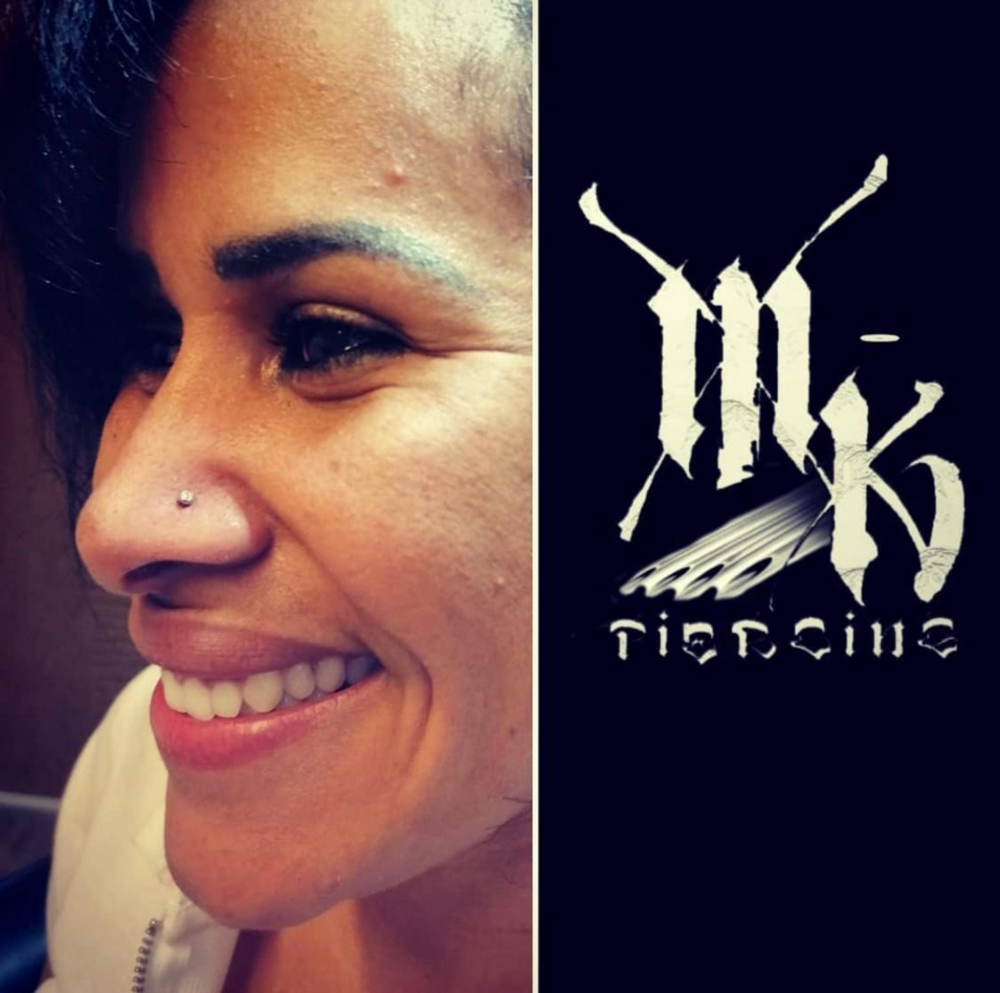
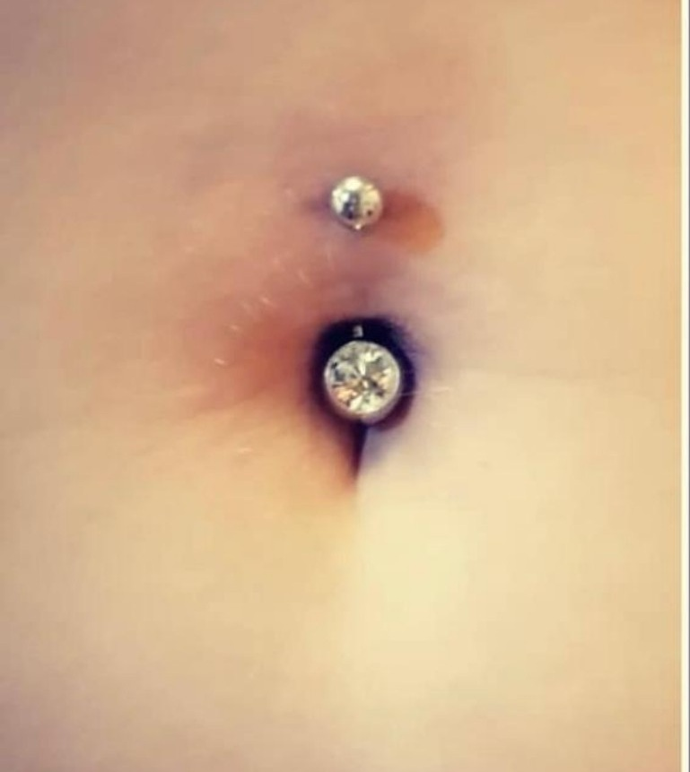
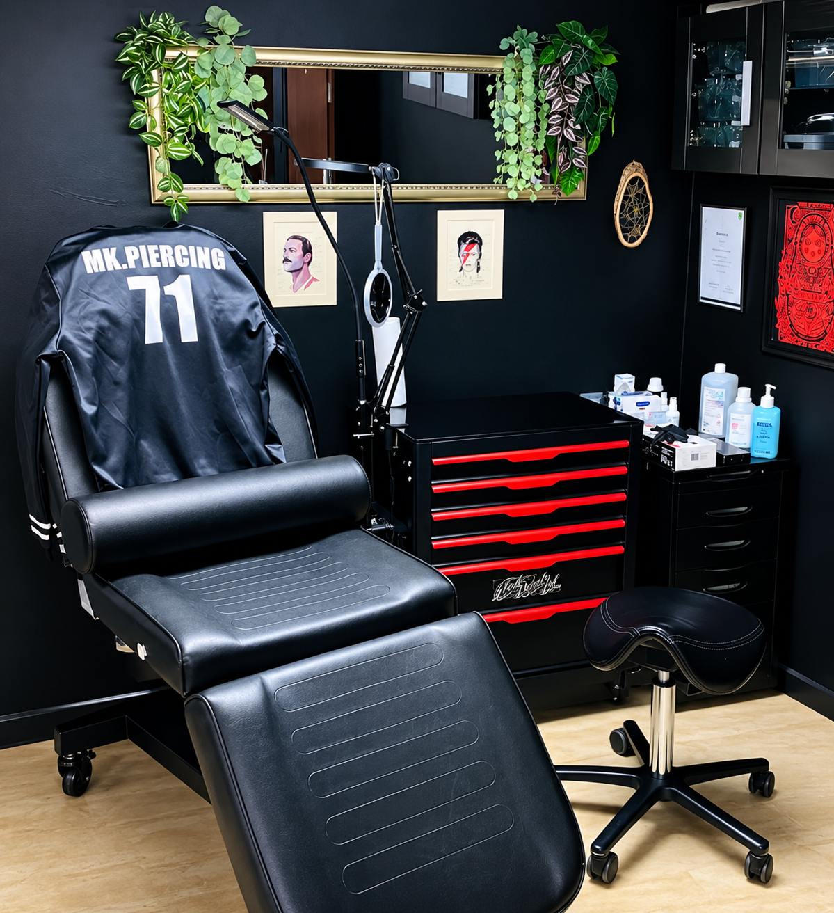

Matthias Kiesler
Piercer aus Leidenschaft
Bei Black Danube Ink
Tattoo & Piercing Studio · Tulln
Piercings




Preise
Nase€ 65,-
Nabel€ 65,-
Ohrknorpelpiercing€ 65,-
Eine Brust€ 65,-
Ohrloch
Stück€ 40,-
Paar€ 70,-
Industrial€ 75,-
Surface€ 90,-
Dermalanchor€ 90,-
Über mich
Hi, ich bin Matthias. Piercen ist für mich mehr als nur ein Job – es ist Leidenschaft, Vertrauen und Handwerk. Ich nehme mir Zeit für Beratung, Hygiene und ein sicheres Gefühl. Egal ob dein erstes Piercing oder ein neues Highlight – bei mir bist du in guten Händen.
Piercer aus Leidenschaft
Hohe Hygienestandards
Individuelle Beratung
Hochwertiger Erstschmuck
Terminvereinbarung
Termine werden über Black Danube Ink vereinbart. Direkter Kontakt mit Matthias ist über Instagram möglich.

Hier findest du mich
Black Danube Ink
Langenlebarnerstraße 53/G2
3430 Tulln an der Donau
Der Button „Route planen“ öffnet den Standort direkt in Google Maps.